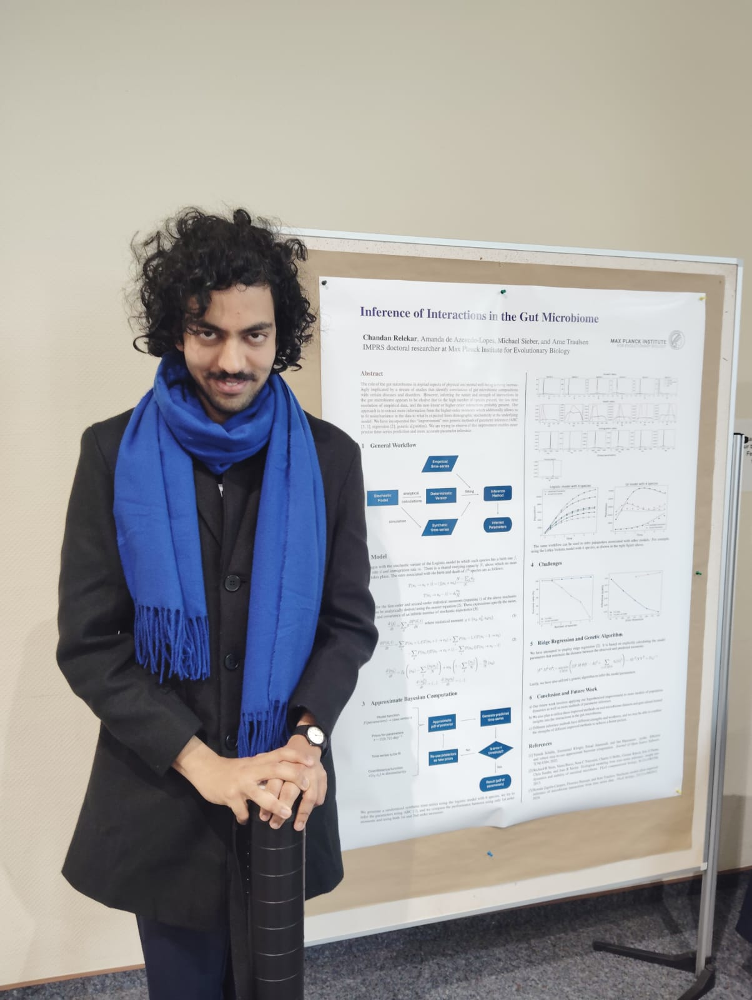

Portfolio
Hello! I'm Chandan Relekar (alternate name representations: Chandan R T, Chandan Relekar Thukaram). I'm
interested in modelling and simulation of complex systems, and in disentangling the interactions and
factors that lead to complexity. Outside of work, I like reading books, coding random stuff, playing
(and developing) video games, playing the piano and climbing!

Education
- Ph.D. (Math bio):
Max Planck Institute for Evolutionary Biology @ Ploen, Germany
(2024 - 2028)
- BS - MS (Physics):
Indian Institute of Science @ Bangalore, India
(2019 - 2024)
- Higher Secondary Education:
Deeksha CFL PU College @ Bangalore, India
(2017 - 2019)
- Secondary Education:
Sudarshan Vidya Mandir ICSE Academy @ Bangalore, India
(2012 - 2017)
Positions
- Academic Staff @ Asian Physics Olympiad 2022:
Part of academic contingent of the organizing team of APhO 2022. Worked on simulating experimental
setups in-silico in order to enable participants from various countries to attend the high-stakes
exam remotely
(August 2021 - May 2022)
Academic Projects
- Doctoral Thesis:
Inference of Interactions in the Gut Microbiome
(September 2024 - February 2028)
- Master's Thesis:
Data-driven discovery of stochastic dynamics underlying transitions in behaviour of groups of fish
(August 2023 - April 2024)
- Bachelor's Thesis:
Investigating spatial patterns and dynamics in ecological systems using cellular automata models,
using insights from percolation theory and phase transitions
(June 2022 - April 2023)
- Molecular Simulations:
Investigating variaton of line tension with temperature in Ising model following Kawasaki dynamics
from height fluctuation spectra
(December 2022)
- Image Processing:
Image pre-processing, segmentation, optical character recognition, post-processing and evaluation of
hand-written and printed text using ANNs and CNNs.
(December 2022)
- Evolutionary Algorithms:
Usage of evolutionary algorithms for behaviour optimization of agents in different settings.
(December 2021)
Coding Projects
(selected few of many)
- Visualize It:
A plethora of simulations of interactive simulations and visualizations from various fields of
science
(November 2020 - present)
- Game Development:
Games developed in C, C++ (SFML), C# (Unity), Java, JavaScript and Python (Pygame)
(October 2019 - present)
- Verbose:
An interpreter for my own programming language that resembles English!
- Rangoli Maker:
A handy tool to create and save lattice-based rangoli art, leveraging the rotational symmetries in
the system
- Online Calculator:
An advanced scientific calculator that evaluates typed expressions, supports an extended array
of functions and has inbuilt scientific constants (PS: the hosting website is defunct now, sorry)
- Pygame-anim and Pygame-UI:
Libraries to render particle animations and implement interactive UI in PyGame
Skills
- Academic | Familiar with mathematical methods associated with graduate level physics courses.
Working knowledge of various aspects of nonlinear dynamics, pattern formation, self-organization and
collective behaviour
- Computer languages | (in decreasing order of proficiency)
Python (NumPy, SciPy, Matplotlib, TensorFlow, PyGame, PyABC), JavaScript (Angular),
C/C++ (SFML), R, C# (Unity), MATLAB, Java (Android SDK)
- Paradigms | Simulations, Numerical Methods, Object-Oriented Programming, CPU Parallelism, GPU
Parallelism (CUDA), Competitive Programming, Software Development, Game Development, Website
Development, Statistical Inference, Artificial Intelligence, State Machines
- Spoken languages | English, Marathi (native), Hindi (full proficiency), Kannada (working
proficiency), French (limited proficiency ~ B1 level)
- Misc | LaTeX, Linux environment, HTML/CSS
Awards
- Distinction | Indian Institute of Science, Bangalore
My CGPA was above 8.5 at the end of my BS degree as well as my MS degree in Physics
(July 2024)
- Top 100 worldwide | 3b1b's Summer of Math Exposition II
My website, Visualize - It was placed
in top 100 worldwide in a competition (organized by famous Math YouTuber 3Blue1Brown) about
making math/science explainers.
(September 2022)
- KVPY Fellowship | Department of Science and Technology, Government of India
I secured an All India Rank of 233 (General Merit) amongst 200,000 students nationwide in the KVPY
SX examination, thereby granting me with KVPY fellowship for the next 5 years.
(August 2019)
- State Rank 4 | Karnataka State Pre-University Board Examination
I secured the 4th highest score amongst 500,000 students in this state-wide examination
(April 2019)
- Letter of Appreciation | Graduation from High School
Awarded a letter of appreciation for consistent excellence in academics, aptitude in science,
excellence in computer skills, achievement in interschool activities and composed behaviour
(Febraury 2017)
Events
- CRC1182 Retreat 2025 | Kiel, Germany
Presented a poster
(October 2025)
- Dynamics of Interacting
Populations and Beyond | Travemunde, Germany
Presented a poster
(September 2025)
- 6th School on PopGen and
Evolution |
ICTS-TIFR, Bangalore, India
Selected to attend the 6th Bangalore school on Population Genetics and Evolution
(February 2024)
- Winter School on Games in Evolutionary Dynamics | SNU, Noida, India
Selected to attend the first winter school on Evolutionary Game Theory
(December 2023)
- NVidia N-WAYS to GPU | SERC, IISc, Bangalore, India
Attended bootcamp on parallelisation using OpenMP, MPI, OpenACC and CUDA
(May 2023)
- Vijyoshi Science Camp | IISc, Bangalore, India
(December 2019)